-- LA LEYENDA DEL DORADO --
La Leyenda de El Dorado es un proyecto de narrativa interactiva inspirado en uno de los mitos más representativos de Colombia. A través del diseño de personajes, escenarios y elementos visuales, se busca recrear una experiencia de exploración y aventura que invite al usuario a descubrir los misterios de esta legendaria historia.
La propuesta artística utiliza un estilo cúbico y minimalista, basado en formas geométricas simples y colores planos que aportan claridad visual y una identidad gráfica propia. Tanto los personajes como los escenarios fueron diseñados para transmitir personalidad, cultura y sentido de descubrimiento, creando un mundo coherente que combina tradición, historia y creatividad.
- NARRATIVA -
La historia gira alrededor de la búsqueda de El Dorado, siguiendo la aventura de personajes que exploran territorios desconocidos llenos de misterios, leyendas y secretos ancestrales. El proyecto busca representar este mito colombiano mediante una experiencia interactiva donde la exploración y el descubrimiento son los elementos principales.
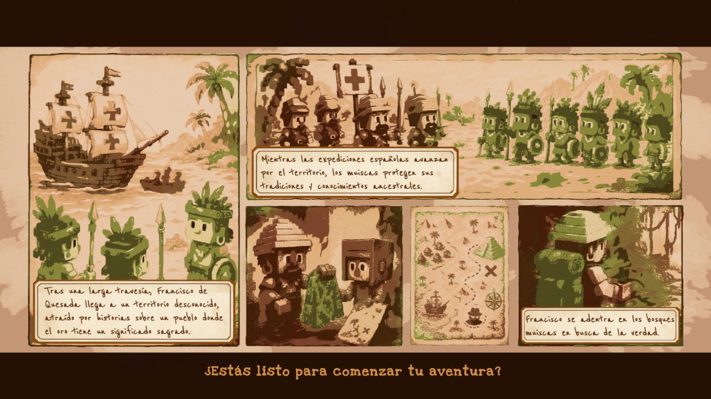
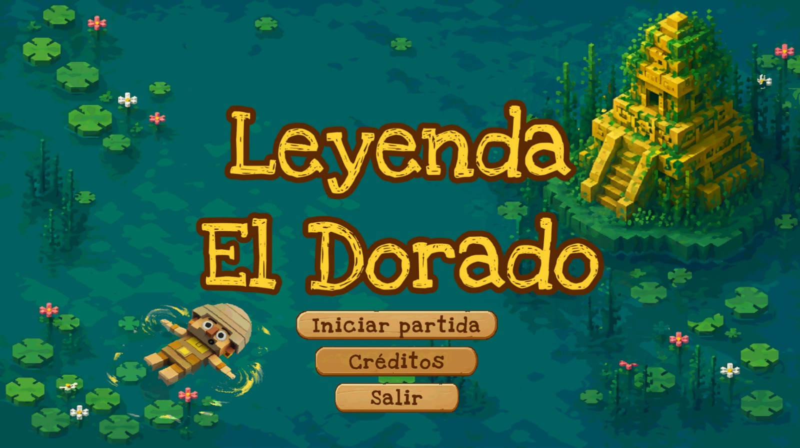
- CARACTERÍSTICAS -
El proyecto presenta un estilo visual cúbico y minimalista, utilizando formas geométricas simples, colores planos y diseños estilizados para crear una identidad visual única.
Los personajes y escenarios fueron desarrollados en 3D buscando transmitir personalidad, cultura y una atmósfera de aventura inspirada en los elementos de la tradición precolombina.
La propuesta integra diseño de personajes, creación de escenarios y narrativa interactiva para construir un mundo donde el jugador pueda explorar y conectar con la historia.
Instruciones:
1.Descarga el Zip y descomprime el archivo
2.Ejecuta el archivo "LeyendaElDorado"
- DESCARGAR JUEGO -
Puedes descargar el proyecto desarrollado en Unity y explorar la experiencia interactiva basada en La Leyenda de El Dorado.
DESCARGAR ZIP|| PERSONALIDAD - PERSONAJES ||
Esta sección explora el desarrollo de personajes a través de sus rasgos físicos, expresiones y lenguaje visual. Cada diseño busca transmitir una personalidad única, permitiendo que el espectador identifique características, emociones y comportamientos antes incluso de conocer la historia del personaje.
El proceso incluyó la investigación de referencias, exploración de siluetas, definición de colores y construcción de elementos visuales que fortalecieran la identidad de cada personaje dentro del proyecto.
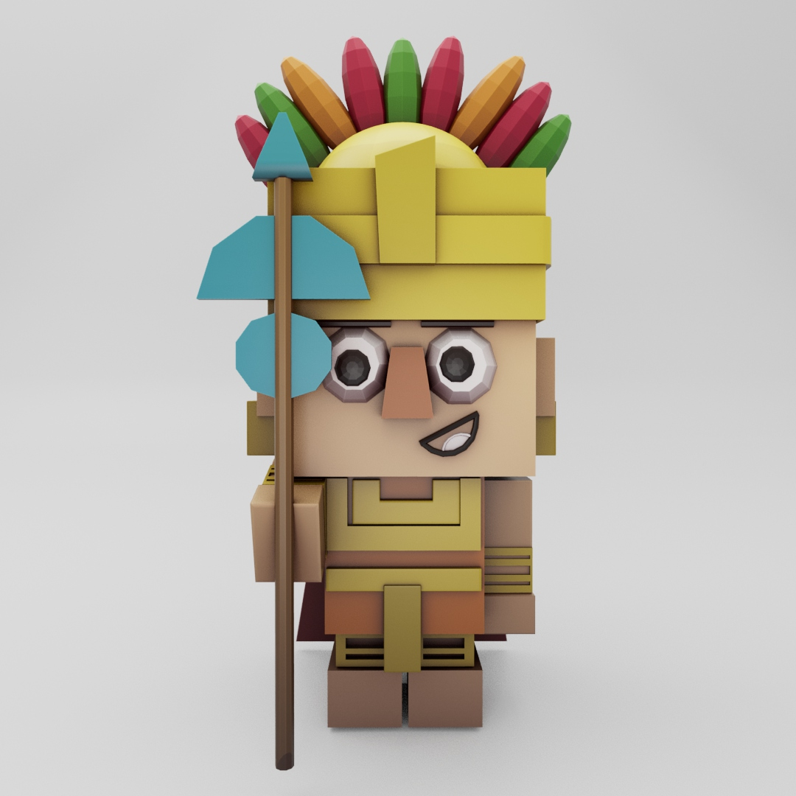
- HUÉ -
Joven heredero de su pueblo y símbolo de liderazgo. Su valentía, fuerza y lealtad lo han convertido en el protector de la tribu ante la amenaza que se aproxima.
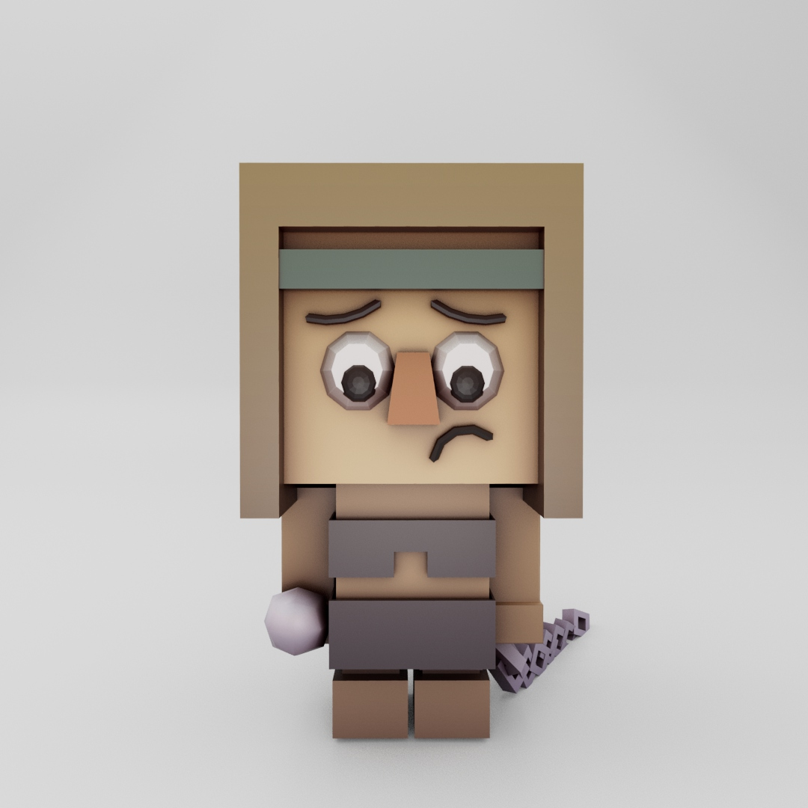
- BAÏA -
Capturada durante un conflicto entre clanes, vive bajo el peso de la servidumbre. Sin embargo, nunca ha dejado de buscar la oportunidad de recuperar su libertad.
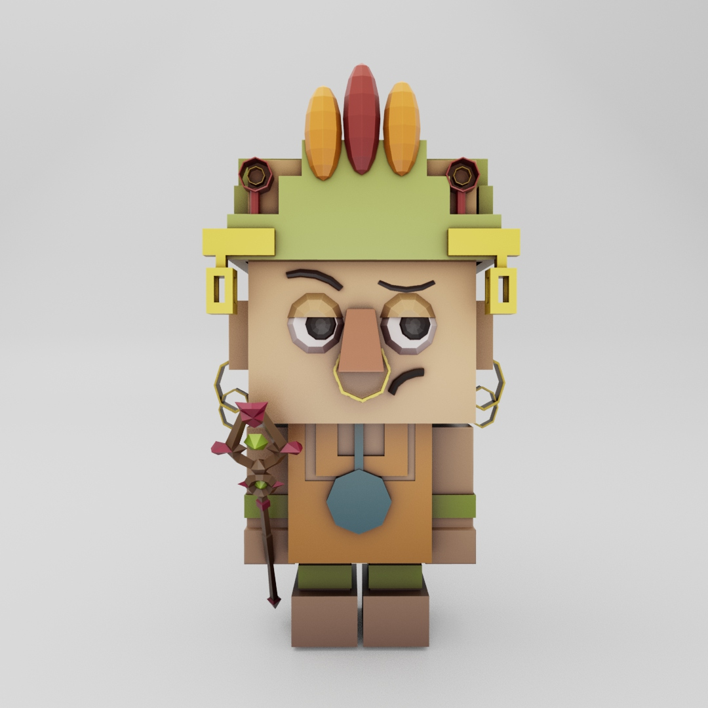
- CHYKY -
Maestro de los rituales y las tradiciones sagradas. Su conocimiento es respetado por todos, aunque su orgullo lo lleva a considerarse más importante que cualquier otro miembro de la aldea.
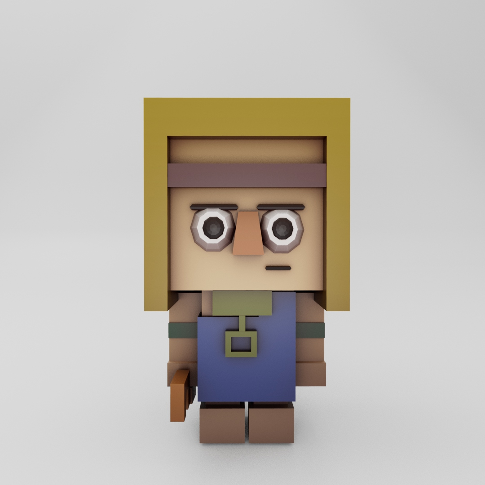
- CHIBCHAZHÚM -
Renderizado final utilizando iluminación y materiales para lograr una presentación realista del proyecto.
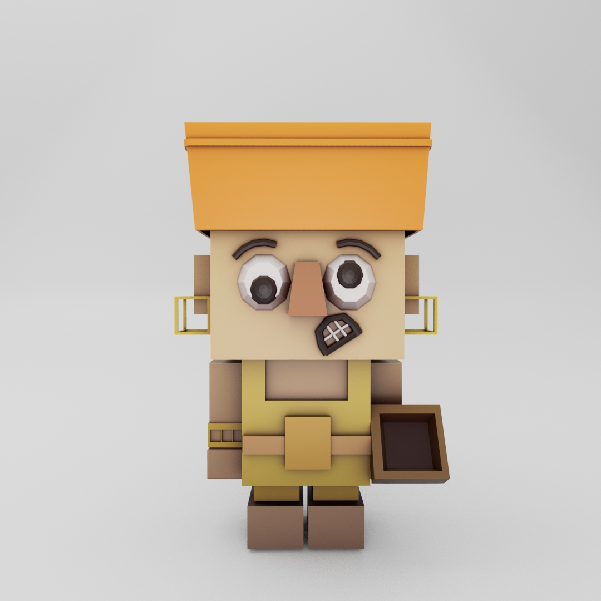
- CHISAKUÏ -
Responsable del arte y los símbolos del pueblo. Su creatividad desbordante lo impulsa a esconder mensajes secretos en sus obras, alimentando los rumores sobre su peculiar comportamiento.
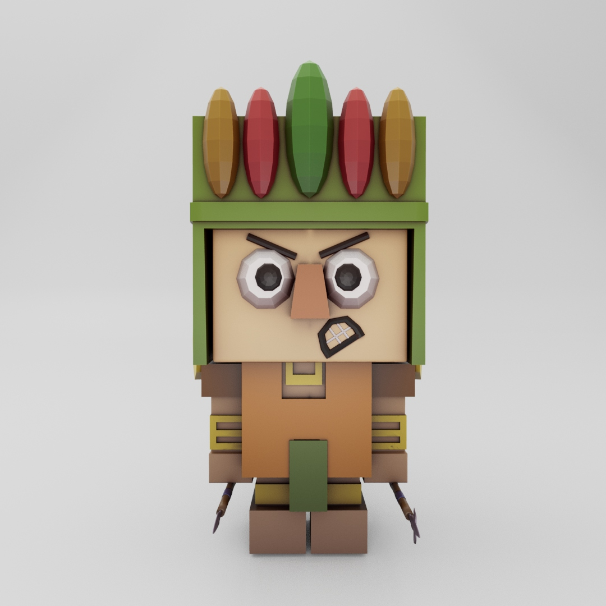
- NYKY -
Guardián de las puertas del lago Guatavita. Marcado por la pérdida de sus hermanos, vive siempre alerta, guiado por el honor y el deber de proteger a su pueblo.
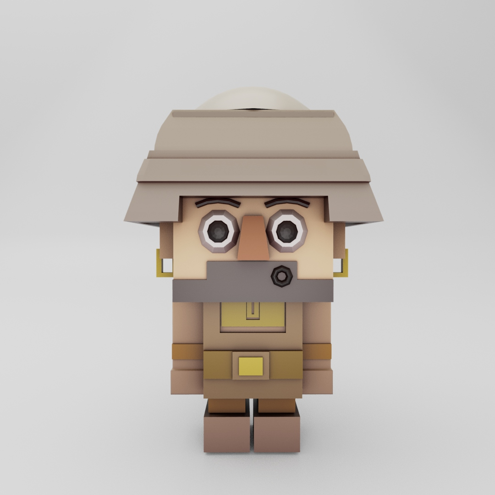
- FRANCISCO DE QUESADA CHICHIKÁ -
Obsesionado con las leyendas de una ciudad cubierta de oro, Francisco cruzó el océano impulsado por su deseo de descubrir lo desconocido. Su ingenio para resolver acertijos y encontrar secretos ocultos lo convierte en un explorador excepcional.
|| INTERACIÓN VIDEOJUEGO - ESCENARIO ||
Esta sección presenta la interacción entre el jugador y los escenarios desarrollados para el proyecto. Los espacios fueron diseñados para guiar la exploración, reforzar la narrativa visual y generar una experiencia inmersiva mediante elementos arquitectónicos, iluminación y composición del entorno.
Además del modelado de los escenarios, se trabajó la distribución de objetos, puntos de interés y elementos interactivos con el fin de crear ambientes dinámicos que complementaran la jugabilidad y la experiencia del usuario.
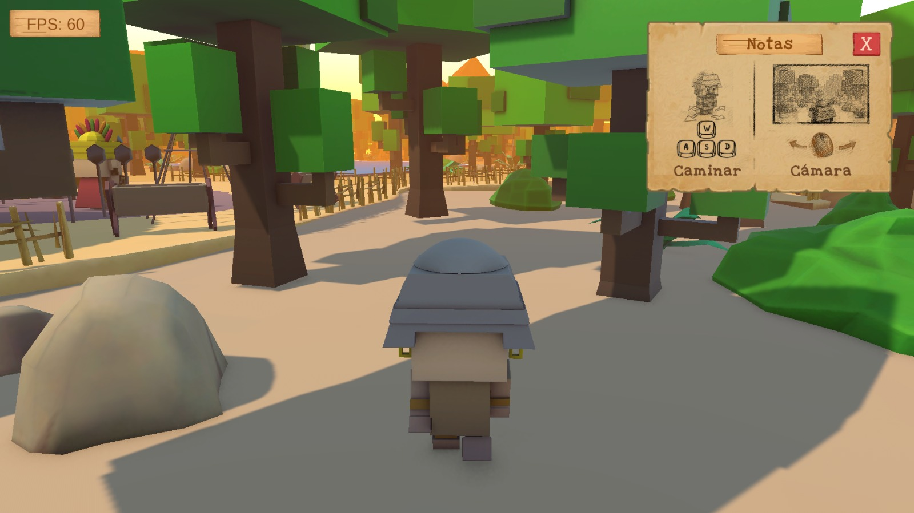
Tutorial de Jugabilidad
Esta interfaz presenta las instrucciones y controles principales del juego, permitiendo que el usuario conozca las teclas de movimiento e interacción. Su propósito es facilitar la comprensión de las mecánicas y garantizar una experiencia de juego más intuitiva desde el inicio.
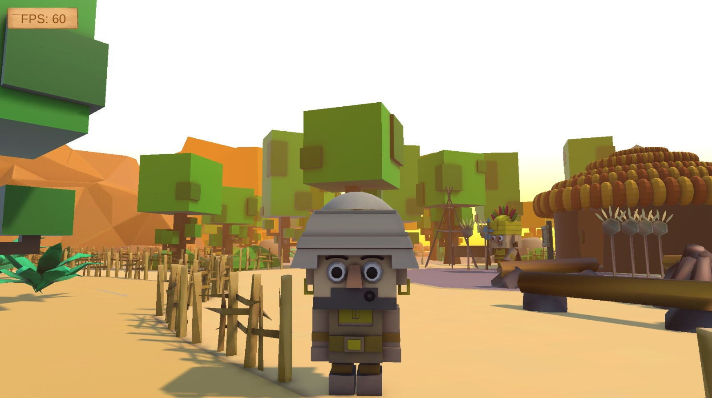
Exploración del Escenario
El escenario cuenta con una distribución amplia y organizada que brinda visibilidad de los diferentes elementos presentes en el mapa. Esto permite al jugador identificar zonas importantes y comprender la función de cada elemento dentro del entorno.
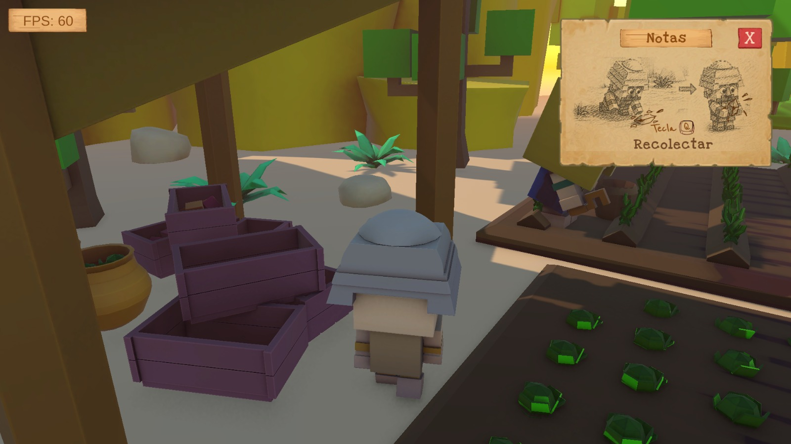
Indicadores de Interacción con NPC
Esta interfaz proporciona instrucciones visuales que informan al usuario cuándo es posible interactuar con un NPC y qué acciones debe realizar para iniciar el diálogo o la interacción correspondiente.
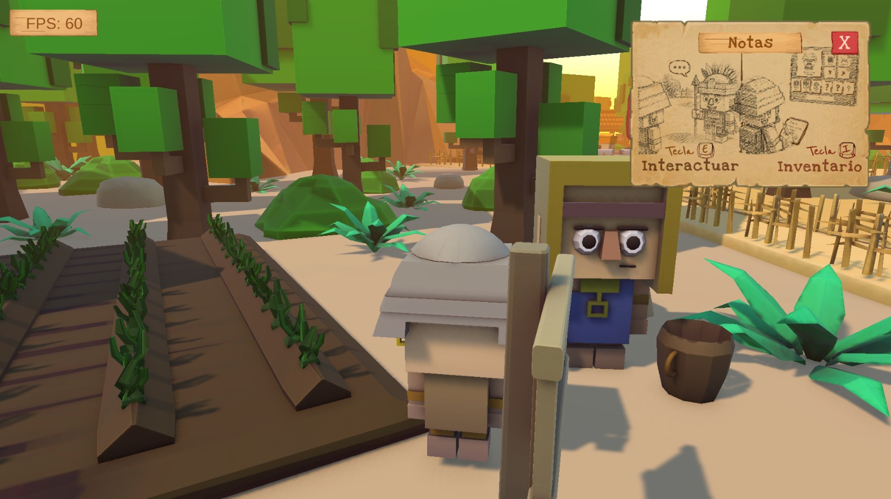
Sistema de Misiones y Recolección
La interacción con determinados NPC permite al jugador conocer su función dentro de la narrativa y obtener indicaciones sobre la recolección de elementos distribuidos en el mapa. Estos objetos son necesarios para avanzar y completar diferentes fragmentos de la historia.
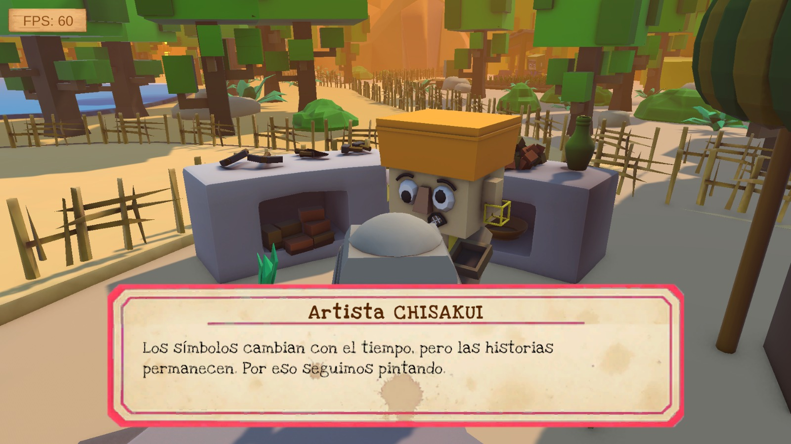
Narrativa y Desarrollo de Personajes
Cada NPC cuenta con diálogos y fragmentos narrativos que permiten conocer aspectos de su personalidad, su papel dentro de la historia y la relación que mantienen con el desarrollo general de la trama.
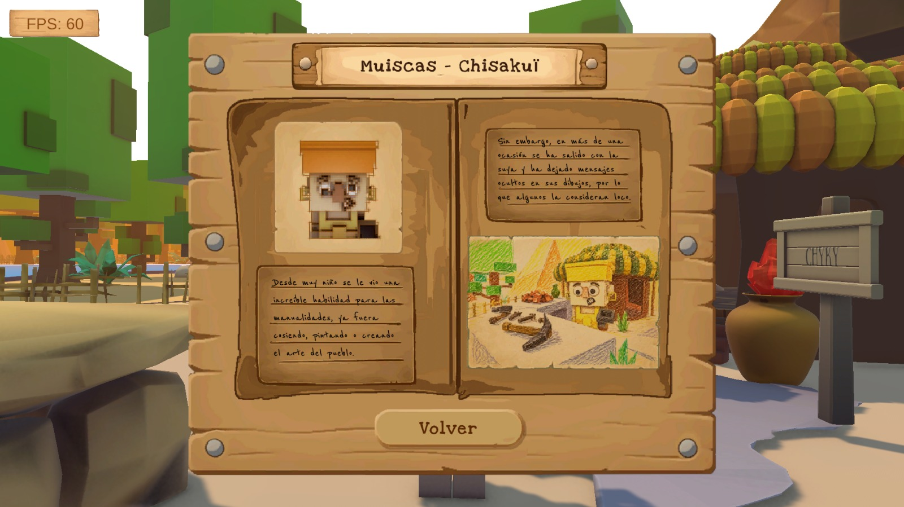
Registro e Inventario Narrativo
Esta interfaz permite consultar información detallada sobre los NPC y visualizar el progreso del jugador respecto a los elementos recolectados. Asimismo, muestra los fragmentos obtenidos y aquellos que aún faltan por descubrir, facilitando el seguimiento y la reconstrucción completa de la historia.